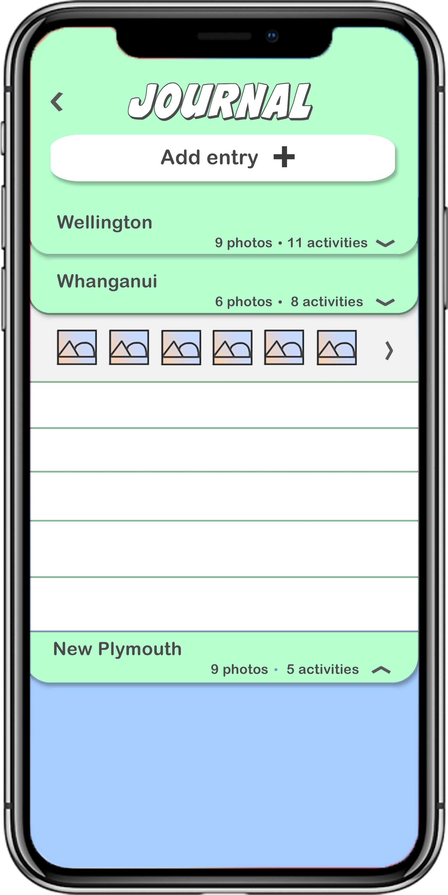
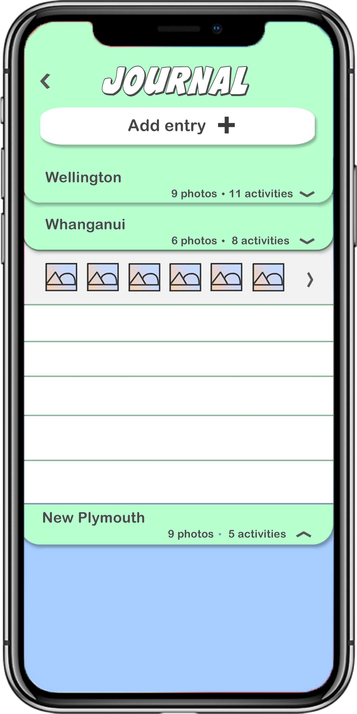

I have decided to go forward with my map of the world idea as I think there’s a lot of potential for a travel journal that uses location data to create interactive visuals. I think this would allow users to log their journeys in an engaging way.
The main visual centres around a map of the world. for every country you visit the map of that country will change colour. The user can select the country that they’re currently in and see a more detailed map of the country with a similar visual where the cities visited will change colour.
Within the country visual there will be the option to log activities in each location, retrace your footsteps with a path finder, and all photos taken on your phone will show up in the location that they were taken on the map.
I think it would also be a good idea. Blah blah blah
I researched other apps that might have similar ideas and found “Polarsteps” which tracks journeys with GPS and gives the option to create a photo-book for your journey at the end. My idea differs in that it focuses on the whole world and your travel history is sorted by location rather than time-frame.
Some things I want to focus on are fun visuals with eye-popping colours, and simplicity of logging and annotating your journey. A lot of comparable applications are a bit more heavy on the writing side, without much in the way of template or buttons to quickly make notes. These also feel quite flat and are centred around a feed that is mostly text and static images.

 
